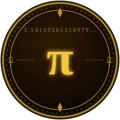

A Journey Through the Infinite
Take any circle in the universe — from a grain of sand to a distant galaxy. Measure its circumference (the distance all the way around). Measure its diameter (straight through the centre). Divide one by the other.
You will always get the same number: 3.14159265358979…
This number never ends. It never repeats. Somewhere inside it, every sequence of digits that has ever existed — or ever will — is hidden, waiting to be found.
We call it Pi (π), and it is one of the deepest mysteries in all of mathematics.
Pi's decimal expansion never ends. Mathematicians have now calculated over 100 trillion digits — and it keeps going forever.
Pi cannot be written as a simple fraction. There are no whole numbers p and q where p ÷ q = π exactly.
Pi cannot be the solution to any algebraic equation with whole-number coefficients. It transcends algebra itself.
Pi appears in physics, probability, quantum mechanics, waves, and DNA — far beyond circles alone. It is woven into the fabric of the universe.
Over 3,500 years ago, the ancient Egyptians were calculating with Pi — centuries before the Greeks, and millennia before modern mathematics.
Egyptian scribe Ahmes copied a remarkable document now known as the Rhind Mathematical Papyrus. Problem 50 asks: "A circular field has diameter 9 khet. What is its area?"
Ahmes solved it by squaring 8/9 of the diameter:
This implies π ≈ 256/81 ≈ 3.16049… — only 0.6% off from the true value. Astonishing for 3,600 years ago.
The Great Pyramid of Khufu contains a stunning hidden ratio. Take its base perimeter and divide by twice the height:
Many scholars believe the architects intentionally encoded π into the pyramid's proportions — a monumental tribute to the circle, 4,500 years before the concept was formally named.
Ancient Egyptian surveyors — called Harpedonaptai (rope stretchers) — used knotted ropes to lay out fields, temples, and cities with extraordinary precision.
Marking curved temple walls and circular ritual spaces required understanding how far a circular path would travel. Their practical mastery of circles was passed down through generations, forming the living roots of formal geometry.
Without these rope stretchers, the great monuments of Egypt could never have been built.
March 14 (3/14) is celebrated as Pi Day worldwide. It is also the birthday of Albert Einstein! On March 14, 2015 at 9:26:53 AM the date and time spelled out 3.14159265358 — a once-in-a-century Pi moment.
At position 762 in Pi's digits, six 9s appear in a row: …999999… Physicist Richard Feynman joked he'd memorize Pi to that digit, then say "nine nine nine nine nine nine and so on" — making it sound like Pi was a repeating decimal!
NASA's Jet Propulsion Laboratory uses only 15 digits of Pi to calculate spacecraft trajectories to other planets. With just 40 digits you could measure the circumference of the observable universe with an error smaller than a single hydrogen atom.
Pi appears in what many call the most beautiful equation ever written: eiπ + 1 = 0. In one elegant line it connects five of mathematics' most fundamental constants: e, i, π, 1, and 0.
Pi governs the period of a pendulum, the way rivers meander across flat plains, the width of DNA strands, the shape of rainbows, and the fundamental equations of quantum mechanics. It is truly woven into the universe.
Drop a needle of length L onto parallel lines spaced L apart. The probability of it crossing a line is exactly 2/π ≈ 63.66%. This surprising connection lets you calculate Pi using pure physical chance — a technique called the Monte Carlo method!
The world record for memorising Pi is held by Rajveer Meena of India, who recited 70,000 digits in 2015. It took 9 hours and 27 minutes — and he wore a blindfold the entire time to prove there was no cheating.
In 1897 the Indiana state legislature nearly passed a bill that would have legally defined Pi as 3.2. A mathematics professor from Purdue happened to be visiting the capitol that day and convinced the senators to drop it permanently.
How many digits of π can you recite from memory? Type each digit after the decimal point. One mistake ends your run — but you can always try again!
📱 On mobile: tap the digit display, then use your number keyboard
Digits light up gold as you type them correctly.